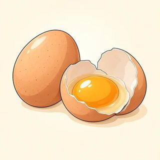

Confident English (B2) · Instructor Kit
Module 8
Fluency & the Final Project
Hear it. Loosen it. Argue it.
Classes C23–C25 · the map
The last three classes of B2
- 8.1 Hear it: fast, natural English. "I wz gonna callya" = I was going to call you.
- 8.2 Loosen it: about thirty, give or take · pizza or something · a bit expensive, and when to be exact.
- 8.3 Argue it: a formal debate. Admittedly…, but… · On balance…
- C26 Final assessment + celebration 🎉
NOTE In the debate, your side is drawn from a card. It is not your opinion.
8.1 · Why fast English is hard to catch
Careful vs natural
| Careful (dictionary) | Natural (real speed) |
|---|---|
| What are you going to do? | Whatcha gonna do? |
| I was going to call you. | I wz gonna callya. |
| Do you want to grab a coffee? | D'you wanna gra-ba coffee? |
Which words stay clear? (The big words: do, call, grab, coffee.) · Which disappear? (The small ones: are, you, to, was.) · Lazy English? (No! Everyone speaks like this.)
8.1 · Disguise 1 · weak forms & the schwa /ə/
Big words clear · small words squeezed
| Word | Strong (US) | Weak | You hear… |
|---|---|---|---|
| to | /tu/ | /tə/ | I want tə go. |
| of | /ʌv/ | /əv/, /ə/ | a cup ə tea |
| and | /ænd/ | /ən/, /n/ | fish 'n' chips |
| for · was · are | /fɔr/ · /wʌz/ · /ɑr/ | /fər/ · /wəz/ · /ər/ | It's fər you. She wəz late. |
CLAP IT I was GOing to CALL you LAter · 3 beats · the small words squeeze in between
8.1 · The famous trap · check the meaning
can /kən/ ≠ CAN'T /kænt/
"I kən go."
Short or long? (Short, quick, unstressed.)
Yes or no? (Yes, I can.)
Short or long? (Short, quick, unstressed.)
Yes or no? (Yes, I can.)
"I CAN'T go."
Short or long? (Long and stressed.)
Do you hear the t? (Often no!)
So listen for…? (The vowel and the stress.)
Short or long? (Long and stressed.)
Do you hear the t? (Often no!)
So listen for…? (The vowel and the stress.)
SHOW ME 👍 can · 👎 can't
8.1 · Disguise 2 · linking
No gaps between words
| Written | You hear |
|---|---|
| turn‿it‿off | tur-ni-toff |
| pick‿it‿up | pi-ki-tup |
| an‿apple · this‿evening | a-napple · thi-sevening |
| go on · I agree | go (w)on · I (y)agree |
TIP Don't listen for the gaps. Listen for the stressed beats.
8.1 · Disguise 3 · elision & assimilation
Lost sounds · blended sounds

san(d)wich

a cuppa tea

fish 'n' chips

gra-ba coffee
"nex(t) day" · "mos(t) people" · "las(t) night": do we write "nex day"? (Never!) · "don't you" → "doncha" · "did you" → "didja": new words? (No, two sounds blend.)
8.1 · Disguise 4 · reductions
Hear it → write the full form
| gonna = going to | wanna = want to / want a | gotta = (have) got to |
| kinda · sorta = kind of · sort of | d'you · didja = do you · did you | whatcha = what are / do you |
| lemme · gimme = let me · give me | dunno = don't know | 'em = them |
RULE 👂 for listening only · ✏️ never "gonna" in an email · 🇺🇸 flap t: water → "wadder," got a → "godda"
8.1 · Listening lab · 20 min
🎧 Dictogloss: Dana's voicemail
- Listen once. Just listen.
- Listen again: write the big words only
- Pairs: share notes
- Groups: rebuild it in full, correct English
- Compare. Label misses: WF · L · E · R
First listening: write? (No, just listen.)
Second: write what? (Only stressed words.)
"gonna" in your text? (No, full forms.)
Word for word? (No, same meaning, every small word.)
Who writes? (The writer. The checker only asks questions.)
Second: write what? (Only stressed words.)
"gonna" in your text? (No, full forms.)
Word for word? (No, same meaning, every small word.)
Who writes? (The writer. The checker only asks questions.)
8.2 · Robot or human?
Being exact can sound cold
🤖 "The trip takes 34 minutes. I bought 6 items. It cost $12.50. There were 19 people in line."
🙂 "It takes about half an hour. I picked up a few things. It was twelve bucks or so. There were, I don't know, twenty-ish people in line."
- We often don't know the exact number, and that's honest
- "…and that kind of thing" treats the listener as someone who gets it
- "It's a bit expensive" is softer, more polite
8.2 · Job 1 · approximate · where does it go?
≈ about twenty · seven-ish · or so
| before the number | about · around · roughly twenty | a couple of minutes |
|---|---|---|
| after the number | ten minutes or so | fifty, give or take · thirty-odd |
| attached | seven-ish · fortyish | bluish |
| almost | It's more or less finished. (≠ "so-so") | |
"Thirty-odd people." Strange people? (No! A bit more than 30.) · "Seven-ish." Can I come at 8:30? (No, too late.) · "Fifty, give or take." Could it be 47? (Yes.) 90? (No.)
8.2 · Jobs 2 & 3 · general nouns · hedges
"I picked up a few things…"

milk

bread

eggs

butter

fruit
🧺
…that kind of thing
| 🧺 general nouns | stuff (no "stuffs"!) · things · and that kind of thing · and so on · pizza or something · the thingy |
|---|---|
| 🪶 hedges | sort of · kind of boring · a bit expensive · In a way, you're right. · I guess it's fine. |
8.2 · Read the room · check the meaning
Natural ✅ or sloppy ❌?
| 😊 be vague | friends · small talk · casual estimates · friendly texts · softening an opinion |
|---|---|
| 🎯 be precise | 💊 dosages · 🔥 safety · 💼 deadlines & reports · 📄 rent, contracts, prices |
Medicine label: "Take two-ish tablets or so." OK? (No! Dangerous.) · To your manager: "Done-ish, sevenish." (No: "nearly complete, by 7 p.m.") · To a friend: "There around seven-ish!" (Perfect.) · "I put the stuff with the thingy near the whatsit." (Sloppy: too many placeholders.)
8.2 · Pairs · A/B cards · 12 min
🔀 Register Switch
- Same facts, told twice
- 1 · to a friend: relaxed, vague, warm
- 2 · to a manager / doctor / landlord / teacher: clear, exact
- Your partner plays both listeners and asks one question each
How many times do you tell it? (Twice.)
First listener? (A friend.)
Second? (The person on the card.)
Different facts? (No, the same facts, different language.)
Your own life? (Only if you want: the card is fine.)
First listener? (A friend.)
Second? (The person on the card.)
Different facts? (No, the same facts, different language.)
Your own life? (Only if you want: the card is fine.)
8.3 · The format · about 17 minutes
🎤 A structured debate
| 🪑 Chair | opens · motion · secret vote 1 | ⏱ Timekeeper | 1 MIN · 15 SEC · TIME |
|---|---|---|---|
| 🟦 Proposer | opening · 2 min | 🟥 Opposer | opening · 2 min |
| ⏸ Huddle | 1 min | 🔁 Rebuttals | 🟦 1½ · 🟥 1½ |
| 🙋 The floor | questions · 4 min | 🏁 Summaries | 🟥 1 · then 🟦 1 |
| 🗳 Vote 2 | "Which team made the stronger case?" · the chair closes | ||
RULE Your side = your card, not your opinion · attack ideas, never people
8.3 · Concede → counter
Admittedly… That said…
Maya: It is widely accepted that car emissions damage our lungs, and if centers were car-free, air quality would improve dramatically.
Tom: Admittedly, cleaner air is a real benefit. That said, a total ban would hit the people who can least afford it.
Maya: That's a fair point, and it's true that access matters. However, most plans don't ban everyone.
| concede | Admittedly… · It's true that… · That may be so… · While I accept that… |
|---|---|
| counter | …but… · However,… · That said,… · …I still believe… · Even so,… |
8.3 · The task · two debates
🗳 Debate time
- Key words only: no full scripts
- Rebuttal: answer what they actually said
- Floor: one short question to a named team
- Plant the toolkit: If…were…, …would · It is widely believed · by far · What really matters is · Not only does… · sort of · on balance
Who chose your side? (Nobody, we drew it.)
Opening: how long? (2 min.) Rebuttal? (1½.) Summary? (1, no new arguments.)
Questions each? (One.)
The vote asks? (Which team argued better.)
TIME card? (Finish your sentence and stop.)
Opening: how long? (2 min.) Rebuttal? (1½.) Summary? (1, no new arguments.)
Questions each? (One.)
The vote asks? (Which team argued better.)
TIME card? (Finish your sentence and stop.)
You can now hear it, loosen it and argue it
Module 8 done. B2 done! 🎉
- 👂 "I wz gonna callya" → I was going to call you
- ≈ about thirty, give or take (to a friend) · 🎯 exactly 31 (to the fire marshal)
- 🎤 Admittedly…, but… · On balance, I'd argue…
Next class (C26): an individual speaking interview (about 8–10 minutes) plus short listening, reading and writing tasks. Then we celebrate! Next course: Advanced English (C1).